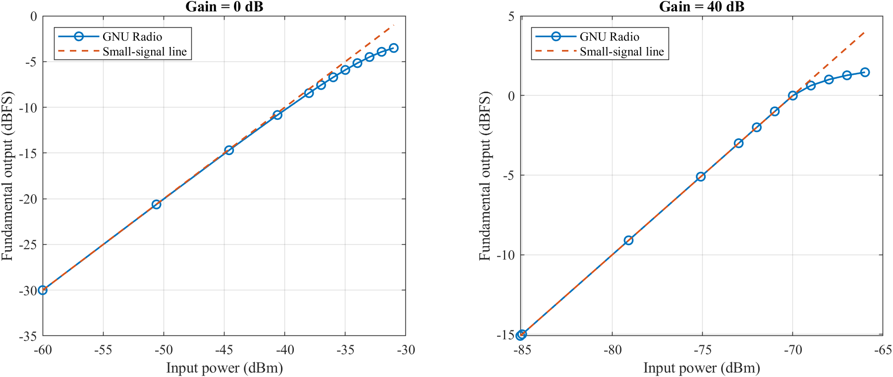
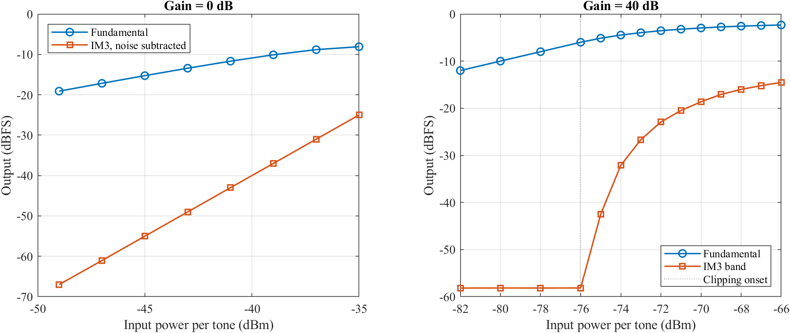

Noise figure and RF parameters
Group 6
The noise factor shows how much the signal-to-noise ratio falls as a signal passes through a receiver. If the source is at the reference temperature \(T_0=290\,K\), we have
where \(T_e\) is the equivalent noise temperature of the receiver, referred to its input. So the output noise is
In a chain, the noise added by each stage is divided by the gain before it. So if the first stage has low noise and enough gain, the later stages have less effect. Loss before the first stage directly increases the total noise figure.
To measure the noise figure with the Y-Factor method, we read the output noise power with the source on and off. If the gain and filter stay the same, the gain, bandwidth, and power conversion factor cancel in the ratio. So we do not need an absolute power measurement. With the off-state temperature equal to \(T_0\), we have
The receiver must stay out of compression with the source on, and automatic gain control must be off. Also, if \(Y\) is too close to one, a small error in the ratio can cause a large error in the noise figure.
To study nonlinearity, we apply two tones close in frequency. The third-order term creates components at \(2f_1-f_2\) and \(2f_2-f_1\). In the weakly nonlinear region, their power rises by about three decibels for each decibel of input increase. If we extend the fundamental and product lines, their intersection gives \(IIP3\). This value predicts the growth of the third-order products. It does not mean that the receiver still works linearly at that input level.
We ran the supplied model in radioconda with GNU Radio 3.10.12.0. This model has an 8-bit ADC, while the real ADALM-PLUTO has a 12-bit ADC. We use the model to study trends; its absolute levels are not the exact values of the real device. The main model parameters are
Here, \(P_{FS0}\) is the input full-scale level at zero gain. We used the original GNU Radio blocks and filters with finite data acquisition. Noise power was averaged in linear units before conversion to decibels. The calibrated model output follows \(P_{out}(dBm)=P_{out}(dBFS)-30\).
First, we find the noise figure at gains of 40 and 10 decibels. For each case, we took five independent on/off readings and averaged the powers in linear units. The results are below.
\par\medskip\noindent
| \(G\;(dB)\) | \(ENR\;(dB)\) | \(N_{off}\) (dBFS) | \(N_{on}\) (dBFS) | \(y\;(dB)\) | \(NF\;(dB)\) |
|---|---|---|---|---|---|
| 40 | 15 | -41.839 | -32.777 | 9.062 | 6.513 |
| 10 | 35 | -51.391 | -42.703 | 8.688 | 26.944 |
\par\medskip
For each row, we convert the power ratio back to a linear value and substitute it into the noise figure relation:
So the result is
At gain 40, a source with \(ENR=15\,dB\) is suitable. At gain 10, the ADC noise is dominant and the total noise figure is much higher. So we chose \(ENR=35\,dB\) to keep the difference between the readings close to 9 decibels.
To find the compression point, we first obtain the small-signal output line from a point with enough signal-to-noise ratio and very little distortion. Then we calculate the difference between this line and the output fundamental:
We find the input power where \(C(P)=1\,dB\). The sweep results for gains of zero and 40 decibels are shown below.

Interpolating between the two points around the compression condition gives
At zero gain, we can also compare the result with the third-order model:
This agrees with the sweep result. At this gain, front-end nonlinearity causes compression before the ADC becomes the limit.
At gain 40, a complex tone starts clipping at about \(-70\,dBm\). The fundamental falls one decibel below the small-signal line a little later, at about \(-68\,dBm\). So the ADC is the limiting stage here.
The sweep step near compression is one decibel; the decimal places come from interpolation.
At zero gain, we applied two tones at 300 and 400 kilohertz at several input levels. We read the nearby products at 200 and 500 kilohertz. To average the two symmetric components, we first add their linear powers and divide by two, then convert to decibels. Some of the results are below.
\par\medskip\noindent
| \(P_{in}\) per tone (dBm) | Fundamental (dBFS) | Raw \(IM3\) band (dBFS) | \(IM3\) after noise subtraction (dBFS) |
|---|---|---|---|
| -47 | -17.166 | -60.219 | -61.046 |
| -45 | -15.265 | -54.798 | -55.019 |
| -43 | -13.423 | -48.951 | -49.008 |
| -41 | -11.681 | -42.992 | -43.007 |
| -39 | -10.105 | -36.999 | -37.002 |
\par\medskip

We subtract the separately measured background power in linear units:
From \(-47\) to \(-43\,dBm\) per tone, the product slope is
Using the small-signal fundamental line from the single-tone test gives
For comparison,
The difference is about 0.07 decibels, so the results agree at the sweep resolution.
We repeat the two-tone test at gain 40, shown on the right of the figure. Below about \(-76\,dBm\) per tone, the product bands mainly show the noise floor. When the input rises from \(-76\) to \(-75\,dBm\), the band reading jumps from about \(-58.15\) to \(-42.48\,dBFS\). This is more than 15 dB for a 1 dB input change.
At the in-phase peak, the two equal tone amplitudes at the ADC add. Clipping starts when \(2A_{ADC,tone}\simeq1\), so the input power per tone is approximately
This agrees with the sudden rise in the products. The slope does not stay at three, and an intercept calculated from the tone-to-product gap changes with the input level. ADC clipping and higher-order effects are now the limit. So a single third-order IIP3 and the 9.6 dB relation do not describe this region.
We tested gains from zero to 50 decibels in steps of 10.
We calculate the reference noise floor in an exact 10-kilohertz band:
The value \(-173.98\,dBm/Hz\) follows the supplied model code. The gap from the noise floor to compression is
\par\medskip\noindent
| \(G\;(dB)\) | \(ENR\;(dB)\) | \(NF\;(dB)\) | \(P_{1dB}\) (dBm) | \(N_{floor}\) (dBm) | \(D\;(dB)\) |
|---|---|---|---|---|---|
| 0 | 45 | 36.910 | -34.656 | -97.070 | 62.414 |
| 10 | 35 | 26.944 | -38.244 | -107.036 | 68.793 |
| 20 | 35 | 17.290 | -48.015 | -116.690 | 68.675 |
| 30 | 15 | 9.545 | -57.998 | -124.435 | 66.437 |
| 40 | 15 | 6.513 | -67.997 | -127.467 | 59.469 |
| 50 | 15 | 6.055 | -78.011 | -127.925 | 49.914 |
\par\medskip
Among the requested gain settings, the largest gap is at \(G=10\,dB\):
The reason for the maximum at an intermediate gain is clear. At low gain, ADC noise is dominant, so more gain lowers the input-referred floor. At high gain, the noise figure has already approached the front-end value of about 6 decibels, while the compression point keeps falling.
The product page lists a minimum frequency of \(2.4\,GHz\) and a maximum frequency of \(2.5\,GHz\). Converting these values to megahertz gives the following table. The page also says “4Band”, but it does not give separate frequency limits for the other bands.
| Range | Lower limit (MHz) | Upper limit (MHz) |
|---|---|---|
| 1 | 2400 | 2500 |
| 2 | Not stated | Not stated |
| 3 | Not stated | Not stated |
Operating ranges stated on the antenna product page
These are the limits stated by the seller. They are not necessarily based on a 3 dB gain criterion.
Now we consider the measurement with two identical antennas. In decibels, the received level is
where \(L_{sys}\) includes the remaining system and cable losses, and
For a fixed distance, the free-space loss changes with frequency. Across the sweep from 400 MHz to 3 GHz, the change is
So the raw curve includes both the antennas and a large frequency-dependent path loss.
First, we use a cable reference sweep to remove the frequency response of the transmitter, receiver, and cable, including the known reference-cable loss. Then we compensate for the free-space loss. The corrected response is proportional to \(G_T(f)+G_R(f)\). With identical antennas in the same conditions, \(G_T=G_R=G_A\), so
where \(C\) is independent of frequency. At a 3 dB cutoff of one antenna,
Therefore, we find the 6 dB edges of the corrected two-antenna curve to obtain the 3 dB edges of one antenna. Without the reference sweep and path-loss correction, the slope and peak can shift, so the bandwidth read from the raw curve is not the antenna bandwidth.
The Pluto transmitter is connected to the receiver through the loopback cable, without an external attenuator. We use the nominal values given in the question:
For one tone, we substitute these values into the input-power relation:
In the two-tone case, the power of each tone is
The two powers add in linear units. Therefore, the total mean power and the maximum envelope power are
For the noise source, we obtain
So an ENR of 15 dB needs \(A_{tx}=61.69789\,dB\), and an ENR of 25 dB needs \(A_{tx}=51.69789\,dB\).
For the safety limits, we use the specified worst case, \(P_{max}=8\,dBm\) and \(A_{pad}=0\). The single-tone condition is
The two-tone mean-power condition gives
With a 0.25 dB attenuation step, these calculated limits become 17.25 and 14.25 dB. At 14.25 dB in the two-tone case, the total mean power is \(-10.17545\,dBm\) and the envelope peak is \(-7.16515\,dBm\). The peak is below the stated damage limit of \(+2.5\,dBm\).
The checklist gives 15 dB for one tone and 18 dB for two tones. The 15 dB value does not meet the worst-case single-tone calculation: it gives \(-7.91515\,dBm\), which is above the \(-10\,dBm\) working limit. We therefore use a common slider minimum of 18 dB for the tone modes. This also follows the stricter two-tone limit in the checklist. In noise mode, the applied attenuation is at least 30 dB.
To calculate the sweep levels, we use the given hardware approximation:
At gain 40, \(P_{FS}=-20\,dBm\) and \(P_{1dB}\simeq-18\,dBm\). So the single-tone sweep starts at \(-50\,dBm\) and ends at \(-15\,dBm\). At gain 50, both levels are 10 dB lower. For two tones at gain 40, the start and end are \(-38\) and \(-22\,dBm\) per tone.
For example, the start attenuation of the single-tone sweep at gain 40 is
Applying the same substitution to the other rows gives the following table. The exact attenuation is shown first, followed by a setting rounded upward to the next 0.25 dB step. This rounding gives a slightly lower input power or ENR.
| Quantity | \(A_{tx}\) exact / setting (dB) | Input level or ENR |
|---|---|---|
| Calculated minimum, single tone, worst case | 17.085 / 17.25 | \(-10.165\,dBm\) total |
| Calculated minimum, two tones, worst case | 14.075 / 14.25 | \(-10.175\,dBm\) total mean |
| Two-tone envelope peak at the preceding setting | — / 14.25 | \(-7.165\,dBm\) peak |
| Calibration tone | 60 / 60 | \(-54.415\,dBm\) |
| \(ENR=15\,dB\) | 61.698 / 61.75 | \(14.948\,dB\) |
| \(ENR=25\,dB\) | 51.698 / 51.75 | \(24.948\,dB\) |
| Single tone, gain 40, start: \(P_{FS}-30\) | 55.585 / 55.75 | \(-50.165\,dBm\) |
| Single tone, gain 40, end: \(P_{1dB}+3\) | 20.585 / 20.75 | \(-15.165\,dBm\) |
| Single tone, gain 50, start: \(P_{FS}-30\) | 65.585 / 65.75 | \(-60.165\,dBm\) |
| Single tone, gain 50, end: \(P_{1dB}+3\) | 30.585 / 30.75 | \(-25.165\,dBm\) |
| Two tones, gain 40, start: \(P_{1dB}-20\) per tone | 37.564 / 37.75 | \(-38.186\,dBm\) per tone |
| Two tones, gain 40, end: \(P_{1dB}-4\) per tone | 21.564 / 21.75 | \(-22.186\,dBm\) per tone |
| Minimum RX gain to measure \(P_{1dB}\) within the working limit | Not a TX setting | \(g=32\,dB\) |
The power rows use the rounded setting. The target ENR values and sweep endpoints are obtained at the exact attenuation values. The first two rows are calculated limits; the flowgraph uses the 18 dB tone minimum described above.
For the last row, we solve
The receiver gain controls amplification inside the receiver. Reducing this gain does not reduce the RF power entering the input connector and the stages before the gain control. So it cannot protect the input from excessive source power. We must control the transmitter amplitude and attenuation before the signal reaches the RX port.
Now we assume that the real \(P_{max}\) is 2 dB below the nominal value. We keep the same measured digital readings and calculate the error caused by using the nominal value. We write an estimated value with a hat. For the input power and ENR,
The measured on/off ratio does not change when we correct the assumed source power. Therefore,
For the level calibration, the definition in the lab manual is \(G_{FS}=P_{digital}-P_{in}\). So
The direct noise-figure estimate uses this calibration:
Finally, the digital tone-to-product gap \(\Delta\) stays the same, while the estimated input power is 2 dB too high. Thus,
| Quantity | Estimated value minus true value |
|---|---|
| ENR | \(+2\,dB\) |
| Noise figure, Y-Factor | \(+2\,dB\) |
| \(G_{FS}\) | \(-2\,dB\) |
| Noise figure, direct method | \(+2\,dB\) |
| IIP3 | \(+2\,dB\) |
From the offline receiver results in Section 2, we have the following predictions. These values are for the supplied 8-bit model. The power-level design above uses the hardware assumptions for the real Pluto.
| Quantity | Prediction (model) | Measurement (lab) |
|---|---|---|
| Noise figure, gain 50 | \(6.055\,dB\) | |
| Noise figure, gain 40 | \(6.513\,dB\) | |
| Noise figure, gain 30 | \(9.545\,dB\) | |
| Input \(P_{1dB}\), gain 40 | \(-67.997\,dBm\) | |
| Input \(P_{1dB}\), gain 50 | \(-78.011\,dBm\) | |
| IM3 onset, gain 40, per tone | About \(-76\,dBm\) |
Predictions from the receiver model and measurements to be taken in the session
The flowgraph lab02_combined.grc uses a 2.4 MHz sample rate, manual receiver gain, and a noise-meter centre of \(-700\,kHz\). It starts with \(A_{tx}=89.75\,dB\) and both digital amplitudes at zero. For the specified test levels, we set the tone amplitude to 0.9; in two-tone mode the flowgraph divides this value by two for each tone. In noise mode, we set the RMS amplitude to 0.01. For the off reading, we set the noise amplitude to zero and keep the same attenuation and cable connection. The applied attenuation is limited to at least 18 dB for tones and 30 dB for noise. The GUI shows the applied attenuation and the estimated input tone power and ENR. We stop the flowgraph before changing cables.